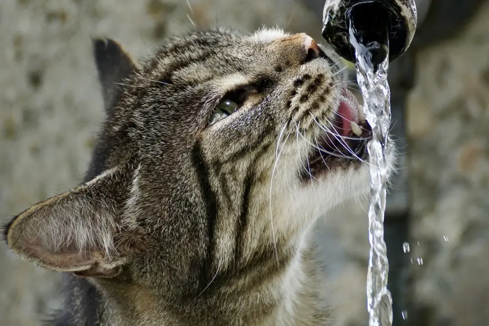
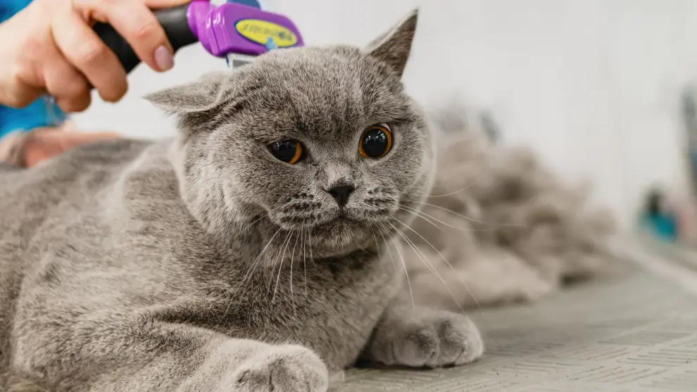
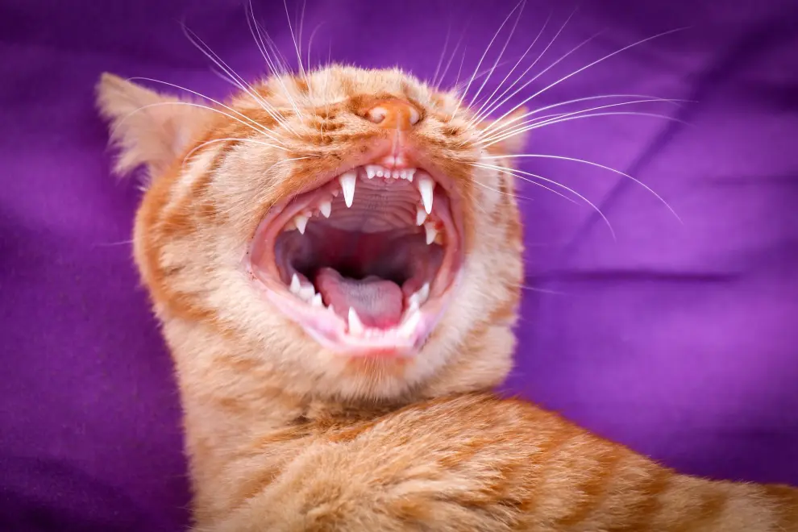
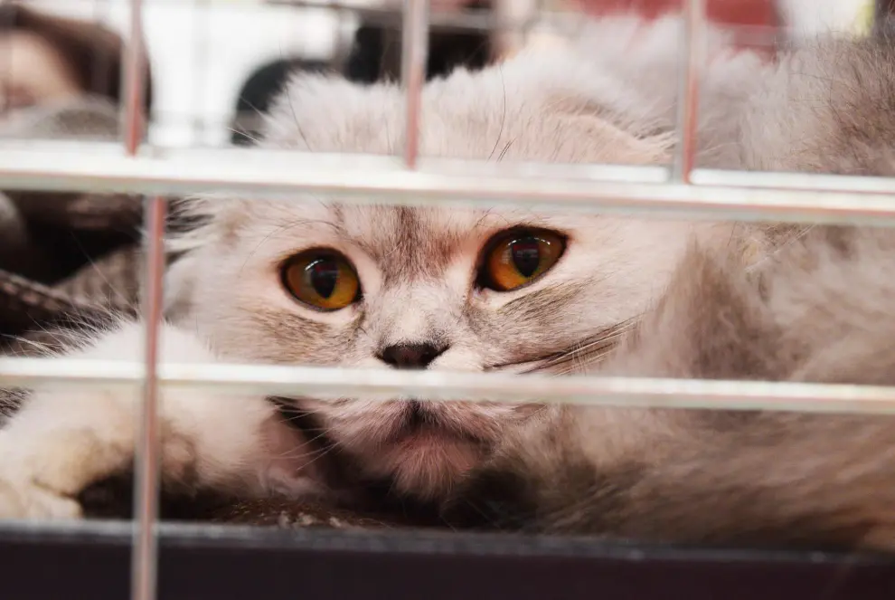

Cuidado de los Gatos
Descendientes de un gato solitario y cazador, nuestros mininos se han convertido en grandes compañeros de vida y en fascinantes amigos que nos sacan sonrisas, carcajadas y nos dan algún que otro susto con sus característicos comportamientos. Todo amante de estos animales debería saber cómo cuidarlos adecuadamente, no solo en cuanto a cuidados veterinarios se refiere, también en cuestiones de comportamiento y etología.

Cuidado con la hidratación.
La hidratación es una parte fundamental de nuestra salud y, también, de la de nuestros gatos. Como ya hemos comentado, nuestros mininos son poco bebedores, olvidan con facilidad que tienen que beber agua (ya que en la naturaleza adquieren la hidratación a través de los animales que cazan). Cuando convivimos con ellos en casa, es imprescindible ofrecerles siempre agua fresca (si está corriendo, mejor, ya que les atraerá más) y asegurarnos de que ingiere la cantidad adecuada diaria (entre 50 y 100 mililitros por kilo de peso) para evitar problemas de salud.

El cuidado del pelaje es importante.
Tanto si convivimos con gatos de pelo corto, como si lo hacemos con aquellos de pelo largo, el cepillado es una de las tareas que no podemos descuidar. Tanto para ayudarles en su tarea de acicalado, como para prevenir las bolas de pelo, el momento del cepillado es algo que debemos de empezar a hacer de forma progresiva desde que son pequeños, para acostumbrarles y que no les suponga un estrés. Esto también beneficiará nuestra relación, ya que estrechará el nuestro vínculo con ellos y, además, nos facilitará la tarea de comprobar si el gato está sano o no (ya que podemos aprovechar el cepillado para revisar cualquier señal de enfermedad).

También debemos cepillar sus dientes.
Aunque esta no es una práctica muy extendida entre los tutores de gatos, muchos veterinarios recomiendan también acostumbrar a nuestros mininos al cepillado de dientes, ya que cuidar de su salud bucal también es importante y, en algunas ocasiones, los snacks pensados para cumplir esa función no son suficientes. Un buen cepillado les ayudará a prevenir la acumulación de placa, gingivitis o la enfermedad periodontal. No obstante, al tratarse de una actividad muy invasiba, debemos hacerlo siempre con cuidado y pensando en el bienestar de nuestras mascotas.

Las visitas al veterinario.
Otro de los pilares básicos para que nuestro gato esté feliz y sano es realizar las visitas la veterinario que sean necesarias. Desde que son cachorros, es importante controlar que todo esté bien, realizar las pruebas necesarias y, por supuesto, poner las vacunas obligatorias y recomendadas por nuestro veterinario de confianza. Para esto también tendremos que realizar un trabajo de adecuamiento al transportín, que será nuestro gran aliado en esas visitas al exterior, para evitar cualquier estrés al animal.